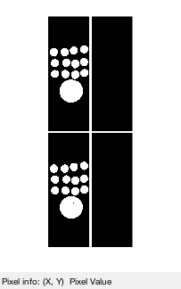
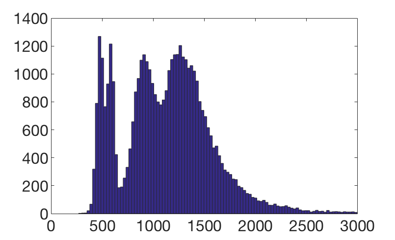
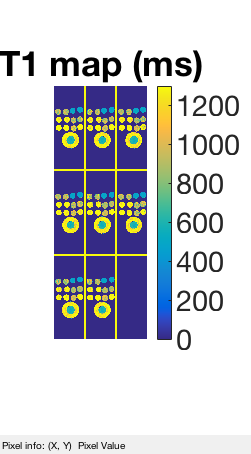
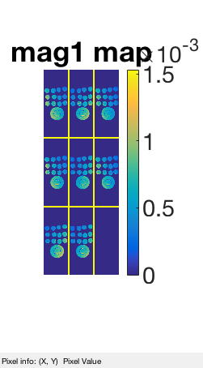
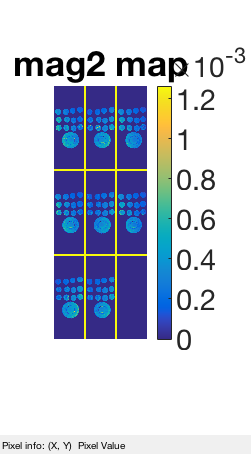

T1imgs_raw = sqreadcfl('ir_cimg');
T1imgs_raw = T1imgs_raw(:,:,[4, 12], :, :);
[ny, nz, ns, nc, nt] = size(T1imgs_raw);
Size: 256 92 16 4 1 5
d1 = dimnorm(reshape(T1imgs_raw, ny, nz, ns, []), 4);
T1mask = d1 > .1*max(d1(:));
st(T1mask)
inv_times = [100, 300, 500, 700, 900] * 1e-3;
TE = 8780e-6;
TF = 4;
TR = 4;
ans =
0 1

proton1 = zeros(ny, nz, ns, nc);
proton2 = zeros(ny, nz, ns, nc);
T1est = zeros(ny, nz, ns, nc);
extra.T1Vec = (1:5000)*1e-3;
extra.tVec = inv_times;
nlsS = getNLSStruct(extra);
tic
s = 60;
p = s/(ny*nz*ns*nc);
fprintf(1,'|%s|\n|\n',repmat('-',1,s));
parfor ii=1:ny*nz*ns*nc
if rand < p
fprintf(1,'\b.\n');
end
[yy, zz, ss, cc] = ind2sub([ny, nz, ns, nc], ii);
mm = T1mask(yy, zz, ss);
if mm == 0
proton1(ii) = 0;
proton2(ii) = 0;
T1est(ii) = 0;
else
y_cplx = squeeze(T1imgs_raw(yy,zz,ss,cc,:));
[T1, v1, v2, res] = rdNls(y_cplx, nlsS);
proton1(ii) = v1;
proton2(ii) = v2;
T1est(ii) = T1;
end
end
toc
|------------------------------------------------------------|
|...............................................................
Elapsed time is 6.593209 seconds.
T1vals = T1est(T1est~=0);
figure(11); hist(T1vals(T1vals<3)*1000, 100); faxis

st(1000*bsxfun(@times, T1est, T1mask), [0, 1300]); colormap('parula'), colorbar;
title('T1 map (ms)'); faxis
stc(bsxfun(@times, proton1, T1mask)); colormap('parula'), colorbar;
title('mag1 map'); faxis
stc(bsxfun(@times, proton2, T1mask)); colormap('parula'), colorbar;
title('mag2 map'); faxis
  